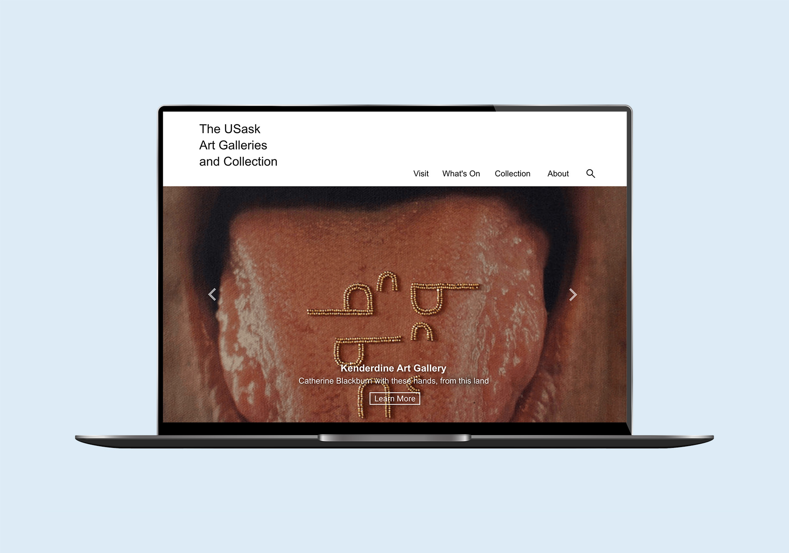
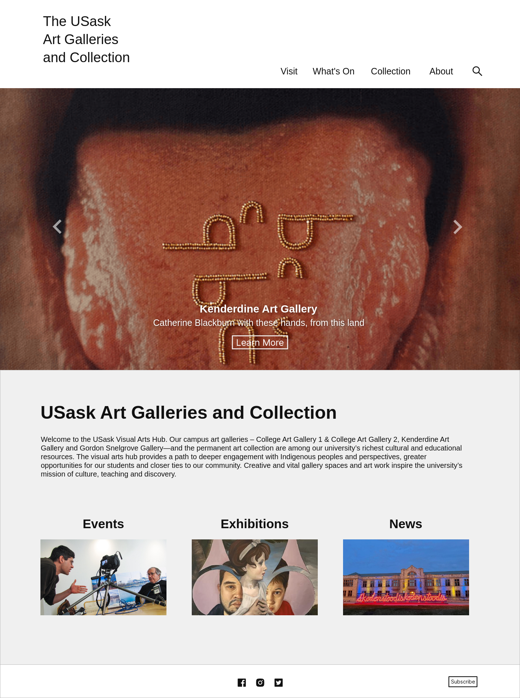
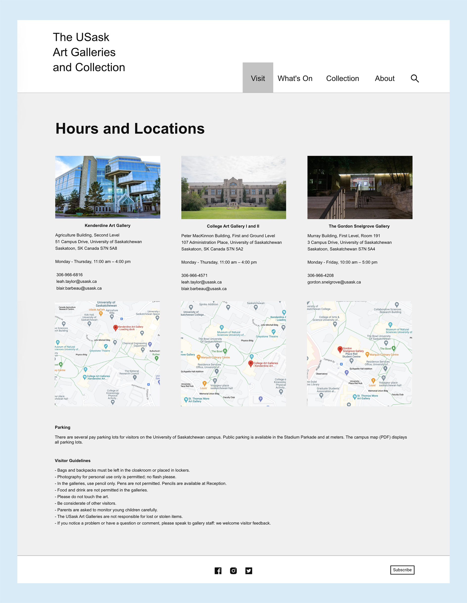
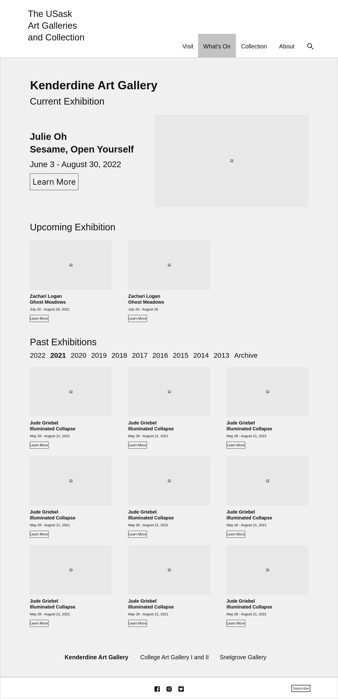
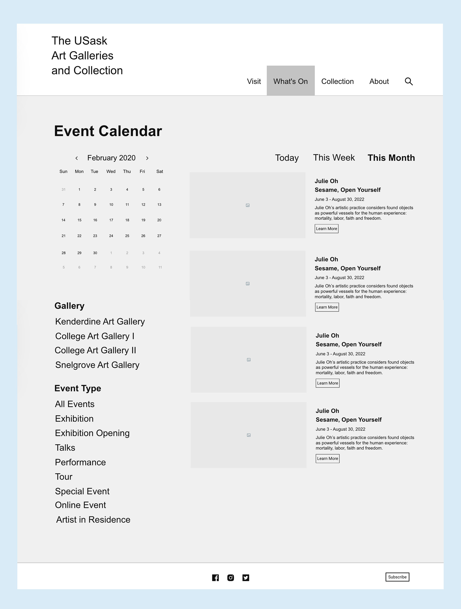

UI · Web Design · Development
Built a clearer way to explore art, exhibitions, and collections at the University of Saskatchewan.

As Collection History and Web Project Lead, I worked with gallery staff and University IT to improve the digital experience of USask Art Galleries & Collection. I focused on researching and restructuring the website’s information architecture, developing UX/UI concepts, creating responsive designs, and implementing selected updates through Cascade.
Role
Collection History and Web Project Lead
Company
USask Art Galleries & Collection
Timeline
November 2021 – April 2023
Team
Focus
UX Research · Information Architecture · UX/UI Design · Responsive Web Design · Web Implementation
Tools
Mockitt · Adobe Creative Suite · Cascade
I contributed across research, structure, design, and implementation, specifically:
How might we make an art gallery website easier to navigate and explore?
USask Art Galleries & Collection needed a clearer way to organize a wide range of information across its digital experience.
Visitors needed to find exhibitions, events, artists, artwork, collections, and practical gallery information while still experiencing the visual and cultural character of the institution.
The challenge was to balance discoverability, information hierarchy, visual presentation, and the existing technical environment.
I began by examining how the existing website organized and presented its content, looking at its structure, navigation, information architecture, and content hierarchy. I also reviewed comparable gallery websites, visitor needs, and relationships between different types of content to identify opportunities to improve how users navigate the site.
The research highlighted four key areas for improvement:
Important information should be easier to identify without searching through dense pages.
Related information should be grouped in ways that make sense to visitors.
Artwork and exhibitions should remain central to the experience.
I explored how content could be structured to create clearer relationships across the website, developing sitemap and navigation concepts to test different ways users could move through the site.
I created wireframes to explore content hierarchy, navigation, page structure, information placement, content relationships, and responsive layouts, allowing me to test the overall structure before moving into detailed UI design.
I developed page layouts and visual concepts that balanced institutional needs with the visual nature of the gallery. The designs explored typography, imagery, content hierarchy, navigation patterns, responsive behaviour, and the presentation of exhibitions and collections.




Interactive prototypes were used to explore navigation and communicate proposed website structures. A small group of art enthusiasts, students, university staff, and USask Art Galleries & Collection staff tested menu layouts and prototypes, with their feedback informing refinements to the navigation and content structure.
I also collaborated with gallery stakeholders and University IT to ensure the designs aligned with content, technical, and organizational requirements.
The final design created a clearer framework for organizing the website’s content and helping visitors discover and move between related information.
Selected updates were implemented directly through Cascade, the university’s content management system, translating design decisions into the live website while working within technical and institutional constraints. Some proposed changes remained unimplemented when my contract ended due to additional review and approval requirements.
The resulting work made the website easier to navigate and established a more consistent, scalable structure for continued development. It also provided design recommendations that could support future website development while keeping artwork and exhibitions at the centre of the experience.
This project reinforced how strongly information architecture influences the overall user experience. A visually appealing website is not enough if users cannot find what they need. Working with institutional stakeholders also showed me how technical systems, content requirements, timelines, and approval processes shape what ultimately reaches a live website. With more time, I would further test and refine the navigation and content structure with users.